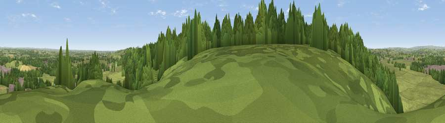

Viewpoint near Marchington
#19917 in England · top 18% of its area beats it · near MarchingtonWhere it is
The exact computed spot (SK 13675 28925). Click the marker for map links.
The view, rendered

A 360° render of this exact spot computed from the terrain model, tree cover and land cover — summer colours, afternoon light, calibrated against photographs of famous viewpoints. Real trees, hedges and buildings will differ in detail.
The panorama
Grey silhouette: terrain skyline in each direction (720 bearings, Earth curvature and refraction included). Dashed green: skyline with trees (+15 m) and buildings (+8 m) as obstacles. Blue strip: how far the ground is visible on each bearing.
Where the view opens
Wedge length = distance to the farthest visible ground on that bearing (vegetation-aware). Rings at 10, 25 and 50 km.
What fills the view
59% grassland · 35% woodland · 3% built-up · 3% cropland
Angular shares of the visible panorama (visual magnitude), not map area. Landscape diversity 0.39 (0–1 Shannon).
Key numbers
More beautiful places nearby
The staircase of upgrades: each row has a higher view potential than everything closer. Driving times are estimates from straight-line distance, calibrated against real road routing — check an actual route before setting out.
| Place | Direction | Drive | Score |
|---|---|---|---|
| Viewpoint near Hanbury | ESE · 3 km | ~8 min | 54.7 |
| Viewpoint near Shirley | NNE · 16 km | ~28 min | 55.6 |
| Viewpoint near Cheadle | NW · 17 km | ~30 min | 61.0 |
| Viewpoint near Wootton | N · 17 km | ~30 min | 66.1 |
| Viewpoint near Wootton | NNW · 18 km | ~30 min | 74.4 |
| Viewpoint near Wootton | NNW · 18 km | ~31 min | 74.8 |
| Tissington Hill | N · 24 km | ~39 min | 75.5 |
| Viewpoint near Stanton under Bardon | ESE · 36 km | ~54 min | 76.0 |
52.85765, -1.79835 · source: screening · position refined by local search. Computed location — check access rights before visiting.